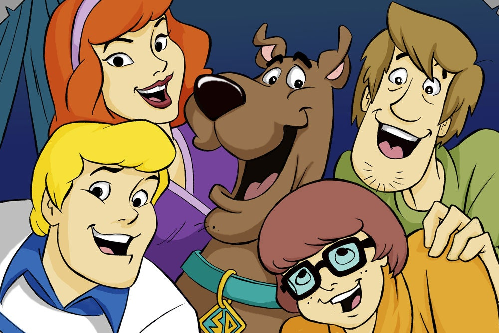

About Scooby
He is a Great Dane dog who is able to speak in broken English. He is a member of th Mystery Incorporated.
Scooby and his friends
Few more words about Scooby
- He's hungry all the time
- He's very cowardly
- He's a pet and lifelong friend of Shaggy Rogers
Scooby's friends
Scooby and his friends grew up together. They have many adventures while solving mysteries and catching cheaters.
Fun fact
The head of children's programming at CBS, Fred Silverman, came up with the character's name from the syllables "doo-be-doo-be-doo" in Frank Sinatra's hit song "Strangers in the Night".
Click on the link to hear the song